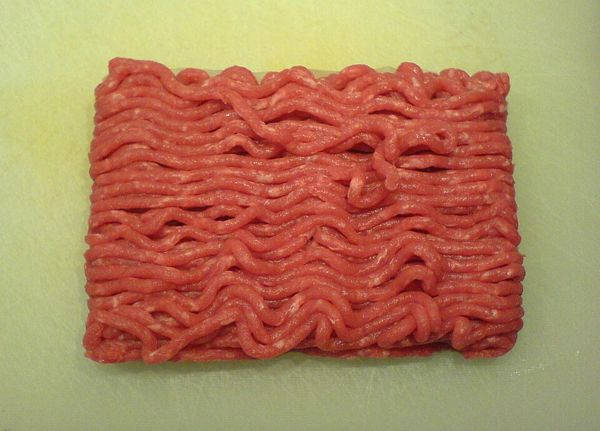

🔴 CARNE ROSSA E ⚪ CARNE BIANCA
 🔴 CARNE ROSSAIL MANZO, L'AGNELLO, IL CAVALLO
🔴 CARNE ROSSAIL MANZO, L'AGNELLO, IL CAVALLO ⚪ CARNE BIANCAIL POLLO, IL TACCHINO, IL CONIGLIO
⚪ CARNE BIANCAIL POLLO, IL TACCHINO, IL CONIGLIOIL VITELLO E IL MAIALE SONO PIÙ CHIARI DEL MANZO. I MEDICI DICONO: POCA CARNE ROSSA, POCHI SALUMI.
🔪 CHE COSA COMPRO DAL MANZO?
LA BISTECCAUNA FETTA ALTA, IN PADELLA O ALLA GRIGLIA🥓LE FETTINEFETTE SOTTILI, 2 MINUTI IN PADELLA
🍲LO SPEZZATINOPEZZI PICCOLI, UN'ORA NEL SUGO

IL MACINATOPER IL RAGÙ, LE POLPETTE, GLI HAMBURGER🔥L'ARROSTOUN PEZZO GRANDE, NEL FORNO
🦴L'OSSOBUCOUNA FETTA DI STINCO CON L'OSSO
🐑 L'AGNELLO, IL TACCHINO, IL CONIGLIO
 L'AGNELLOLE COSTOLETTE, IL COSCIOTTO, LA SPALLA
L'AGNELLOLE COSTOLETTE, IL COSCIOTTO, LA SPALLA IL TACCHINOIL PETTO A FETTINE (LA FESA DI TACCHINO)
IL TACCHINOIL PETTO A FETTINE (LA FESA DI TACCHINO) IL CONIGLIOINTERO O A PEZZI, IN UMIDO
IL CONIGLIOINTERO O A PEZZI, IN UMIDO